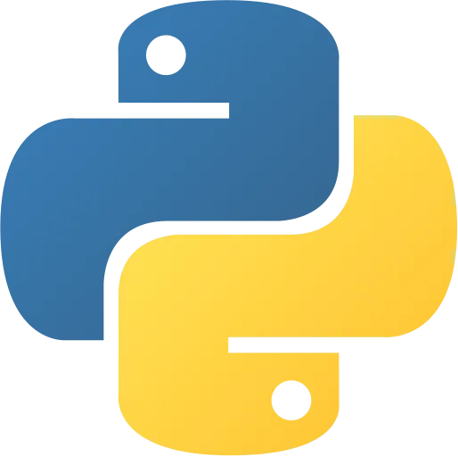

Academic Background
Augusta University
School of Computer and Cyber Sciences
School of Computer and Cyber Sciences
- Bachelors of Science in Cyber Security
- Minor in Computer Science
- Sophomore
- Expected Graduation: May 2026
- GPA: 3.63
- Dean's List Spring 2023
Courses Completed
CSCI-1200 : Introduction to Computer Programs
- Successfully completed various programming projects throughout the course, applying the fundamental concepts of Python and programming languages to solve real-world problems.
- Demonstrated a strong understanding of core programming concepts, such as variables, data types, control structures, loops, functions, and object-oriented programming principles.
- Completed a final project at the end of the semester building on the concepts learned through out the semester and built a fully-functional Rock, Paper, Scissor, Lizard, Spock.

CSCI-1301 : Principles of Comp Programming I

- Completed a series of challenging programming projects throughout the course, furthering my understanding of advanced C# concepts and their practical application.
- Expanded upon the foundational knowledge gained from the previous programming course, further developing skills in areas such as object-oriented programming, control-structures, data-types, linear data structures and methods.
- Actively engaged in class discussions and participated in coding exercises, actively seeking to deepen my understanding of complex C# topics and techniques.
AIST-2220 : Introduction to Web Development

- Learned about the fundamentals of HTML and CSS through a series of hands-on projects in class and for homework.
- Developed a personal website with a blog using HTML and CSS, applying the concepts and techniques learned in the course to create an aesthetically pleasing, semantic and responsive website with mobile functionality.
- Engaged in self-directed learning and exploration, leveraging online resources and tutorials to expand my knowledge of HTML and CSS beyondthe course curriculum, resulting in additional enhancements and refinements to my personal website.
Courses In Progress
CSCI-1302 : Principles of Comp Programming II

- Mastered object-oriented principles including encapsulation, inheritance, and polymorphism in C#
- Developed several programs utilizing classes, properties, methods, and constructors
- Implemented exception handling using try/catch/finally blocks for improved error control and also learned how to use the built-in debugger in Visual Studio.
- Created applications and classes to effectively to work with data structures such as singly-linked lists, multi-dimensional arrays, jagged arrays, and collections.
- Demonstrated understanding of value and reference types, parameters, and return values
CYBER-2600 : Networking Cyber Security
- Completed a series of labs involving virtual machines using Kali Linux and BackTrack for penetration testing and implementing network security.
- Learned about how to implement network security and completed hands on labs where we secured a virtual network against threats using firewalls like pfSense in lab.
- Both in class and in lab learned how to perform reconnaissance, scanning, exploitation, and post-exploitation on systems with OSINT Kali modules, network and port scanning with nmap and vulnscan with metasploit.
- Learned how to execute and defend against SQL injection, cross-site scripting, and other web application attacks using Burpsuite and SQL Lite.
- Learned in depth about the fundamentals of networking and the 7 layers of the OSI Model in class to analyze network traffic using packet sniffers like Wireshark in lab.
AIST-2120 : Scripting and Automation

- Learned how to create task specific programs to automate tasks and processes with Python's os, shutil, logging modules.
- Learned how to create Python programs to scrap and parse data from websites using BeautifulSoup and Selenium
- Developed several programs to process and analyze JSON, CSV, PDF, and DOCX files
- Created scripts using regular expressions to detect and log both SQL statements found in user input and IP Addresses in files
- Implemented effective debugging into programs using logs and exceptions for error diagnosis during development